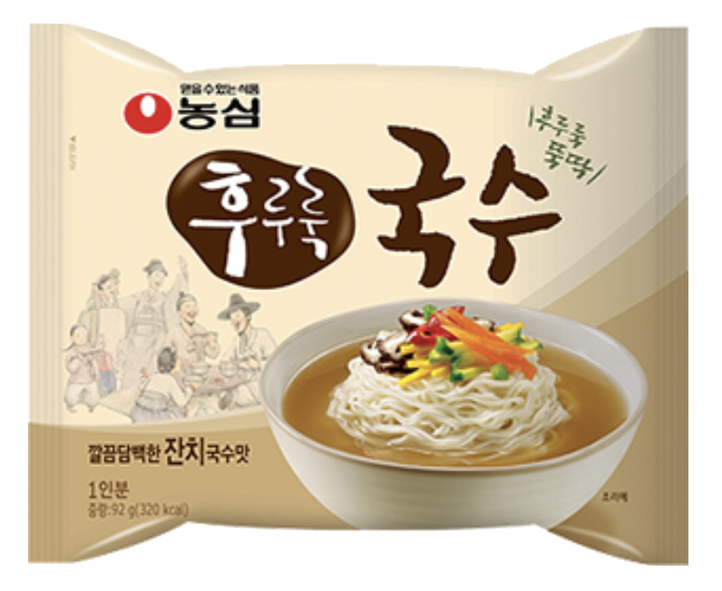
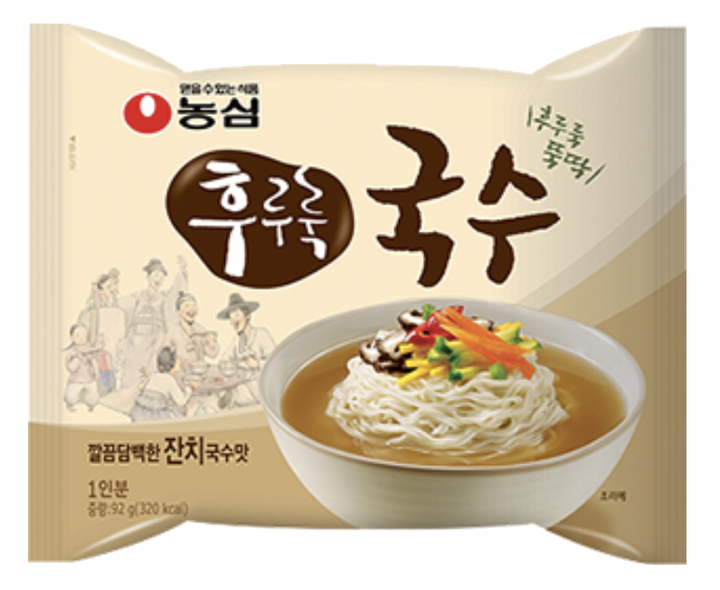

Kalguksu
Weight: 98g
Year of Release: 1997
Rating: 3.8/5
Notable flavors: anchovies, zucchini
Kalguksu consists of knife-cut noodles, a light broth, and seafood (preferably mussels or clams). As someone who loves this dish, one of the few non-spicy noodles that I like, I didn't like this version as much. It may have been because of the broth...

 
